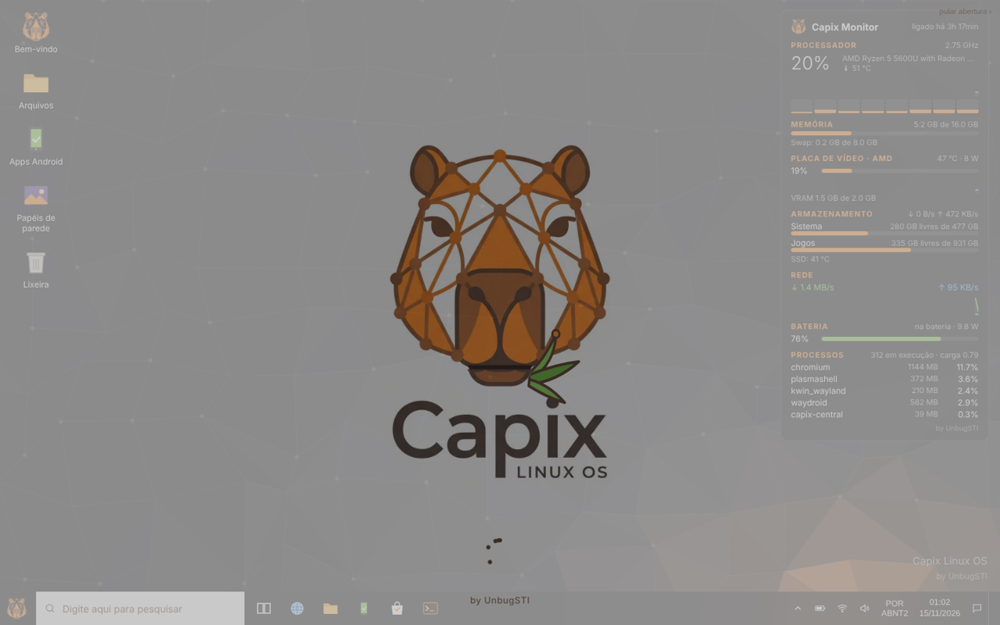
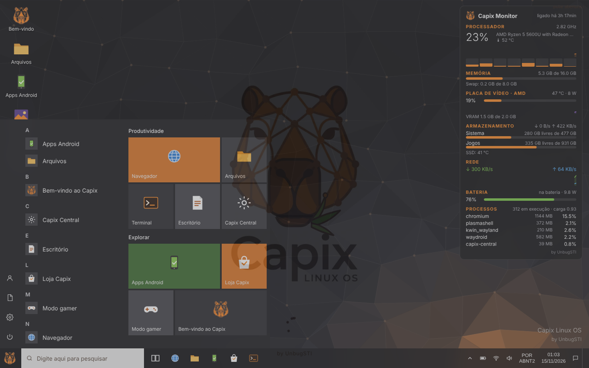
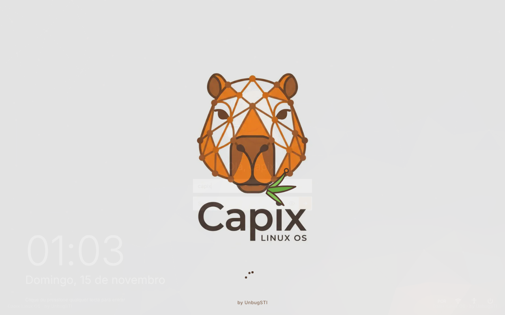

O Windows que você ama,
com a força do Linux
O Capix é para quem curte o jeito do Windows mas não abre mão da segurança, da leveza e do controle do Linux. Interface familiar, sistema blindado contra alterações, atualizações automáticas e tudo embarcado — apps web, Android e Linux.

Você já sabe usar
Barra de tarefas, menu Iniciar, bandeja e relógio no mesmo lugar de sempre. Quem vem do Windows 10 se vira no primeiro minuto.
Leve e rápido
Boot rápido e pouco consumo de memória. Roda bem até em notebook mais simples, sem travar e sem telemetria rodando por trás.
Seguro de verdade
Sistema somente-leitura, firewall e antivírus ativos de fábrica. Se algo der errado, um comando volta para a versão anterior.
A cara é de Windows. A alma é Linux.
Veja o Capix funcionando — do login à área de trabalho.
Tudo onde você espera encontrar
Menu Iniciar com busca, lista de apps em ordem alfabética e blocos dinâmicos. Apps web, Android e Linux convivem lado a lado — abre o Navegador, a Loja Capix ou o Modo gamer com um clique.

Uma capivara te esperando
Na tela de login, a capivara acompanha o cursor enquanto você digita o usuário e toma um cafézinho de olhos fechados quando você digita a senha. Se errar a senha, ela balança a cabeça dizendo "não".

Familiar, com superpoderes
O Capix Monitor mostra processador, memória, placa de vídeo, discos, rede e bateria em tempo real, direto na área de trabalho. E a Capix Central (Super+I) reúne todo o controle do sistema num painel só.
Windows por fora, Linux por dentro
O conforto que você já conhece, sobre uma base pensada para segurança e desempenho.
🪟 Do Windows
- Layout Windows 10: barra inferior, menu Iniciar, bandeja e relógio
- Compatível com documentos do Office (LibreOffice)
- Roda jogos de Windows via Steam/Proton, Bottles e Lutris
- Instala sites como aplicativos, igual a um PC comum
🐧 Do Linux
- Sistema imutável: os arquivos do sistema não se alteram
- Atualização automática em segundo plano e rollback num comando
- Sem vírus comuns de Windows e sem telemetria
- Leve, com firewall ativo e apps em sandbox (Flatpak)
Pronto pra trabalhar, jogar e investigar
Tudo embarcado de fábrica e controlado por um painel só: a Capix Central.
Capix Central
Um painel para updates e restauração, apps Android, loja de apps, IA, segurança, backup, aparência e muito mais.
Proteção de série
Firewall ativo, antivírus ClamAV com varredura semanal e USBGuard contra dispositivos USB desconhecidos.
Capix Backup
Cópias incrementais da pasta pessoal para um disco externo, automáticas todo dia, com várias versões guardadas.
Capix Privacidade
VPN WireGuard num clique, cofre de senhas, Tor Browser, triturador de arquivos e navegador descartável.
Capix Faro
Investigação passiva de infraestrutura e ameaças: domínios, IPs, links suspeitos, arquivos, hashes, cabeçalhos de e-mail e casos em Markdown.
Modo gamer
Perfil de desempenho, GameMode e MangoHud, Steam/Heroic/Lutris num clique, jogos na nuvem e sessão em modo console.
Assistente privado
IA local e offline (Ollama) instalada com um clique — sem mandar seus dados pra ninguém.
Capix Monitor
Widget na área de trabalho com CPU, GPU, memória, discos, rede, bateria, temperaturas e os processos que mais consomem.
AMD, Intel e NVIDIA
Drivers abertos de fábrica e uma imagem à parte com o driver NVIDIA proprietário já embutido.
Instalar é rápido
Do download ao sistema rodando em quatro passos.
Baixe
Pegue a ISO do Capix (AMD/Intel ou NVIDIA) na seção de downloads.
Grave
Grave num pendrive com o Rufus ou o balenaEtcher (modo imagem).
Instale
Dê boot pelo pendrive. O instalador pergunta em qual disco instalar — nada é apagado sem você escolher.
Pronto
Reinicie e remova o pendrive. Daí em diante o sistema se atualiza sozinho.
Leve o Capix pra sua máquina
Instalou uma vez, o sistema se mantém atualizado sozinho a partir da imagem oficial.
💿 Capix — ISO instalável AMD · Intel
Instalador gráfico interativo. Você escolhe o disco; nada é apagado sem perguntar.
- Pendrive inicializável (~5 GB)
- Drivers de vídeo abertos (Mesa/Vulkan)
- Tudo embarcado: Android, loja de apps, Capix Central
🟢 Capix — NVIDIA NVIDIA
Instale a versão AMD/Intel ao lado e troque para a imagem NVIDIA (driver proprietário já embutido) com um comando.
- Driver NVIDIA pronto (o sistema é somente-leitura)
- Ideal para notebooks e desktops com GeForce
- Atualiza sozinho, igual à versão padrão
# AMD / Intel
sudo bootc switch ghcr.io/sandrim01/capix:44
# NVIDIA
sudo bootc switch ghcr.io/sandrim01/capix-nvidia:44
A imagem do sistema é pública e permanente no GitHub Container Registry (ghcr.io/sandrim01/capix). A ISO de ~5 GB fica nos artefatos do GitHub Actions — para um link de download direto e definitivo, ela pode ser publicada no Internet Archive ou num bucket (Cloudflare R2).
🎬 Experimente a prévia interativa
Um arquivo só, direto no navegador: a logo mastigando no boot, a capivara tomando cafézinho no login e a área de trabalho estilo Windows 10 — pra clicar e explorar.
Abrir prévia interativa